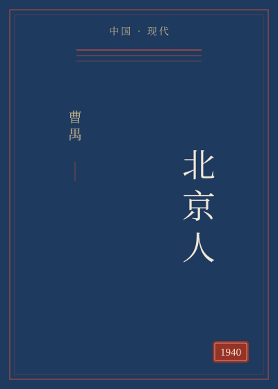
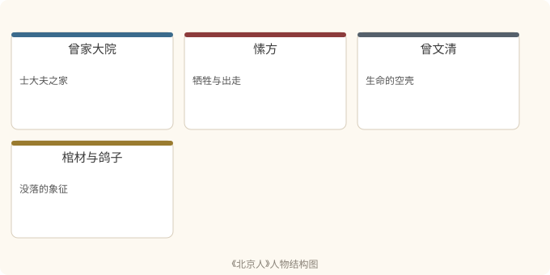

北京人
一、基本信息
| 作者 | 曹禺 |
|---|---|
| 成书/出版 | 1940年（B080 曹禺作者页口径：北京人（1940）） Cao Yu — Encyclopaedia Britannica（百科全书） |
| 国别/地区 | 中国 |
| 时代 | 现当代 · 现代 |
| 体裁 | 话剧 |
| 语言 | 汉语（白话） |

《北京人》人物结构图（主题·结构图）
二、创作背景
曹禺戏剧三部曲的第三部：《雷雨》《日出》之后（通说）。
题材：北平士大夫家庭曾家的没落——『棺材』意象贯穿（通说）。
三、内容脉络
曾皓的寿材与债务；愫方（姨侄女）无声的爱与牺牲；瑞贞的出走（通说）。
『北京人』原始人的锤声：象征与现实的互文（通说）。
四、主要人物表
| 人物 | 身份 | 说明 |
|---|---|---|
| 愫方 | 姨侄女 | 『把好的送给别人』的东方女性（通说） |
| 曾文清 | 长子 | 『生命的空壳』（通说待核） |
| 曾皓 | 家长 | 恋棺材的老人 |
| 思懿 | 长媳 | 精明的管家 |
五、主题与艺术特点
- 士大夫文化的没落（通说）。
- 女性的出走：愫方与瑞贞的双线觉醒（通说）。
- 象征主义：鸽子、棺材、北京猿人（通说）。
六、影响与评论
- 曹禺为中国话剧成熟期代表作家（B080 作者页定位）。
Cao Yu — Encyclopaedia Britannica（百科全书） - 与《雷雨》《日出》并列为曹禺三大杰作（通说）。
Cao Yu — Encyclopaedia Britannica（百科全书）
七、阅读建议
难点
- 舒缓的抒情节奏——不同于《雷雨》的强情节。
- 象征系统的解读。
- 《北京人》（人民文学出版社《曹禺选集》，通说待核）。
《雷雨》→《北京人》：比较两种戏剧美学。
八、待核实
- 1940年首演与初版细节待核。
- 愫方原型（曹禺方瑞说）待核。
- 『北京人』象征的多解性考订待核。
本页主要来源
曹禺的其他收录作品：雷雨